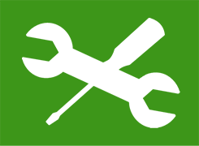

<ion-view view-title="Sessionmanager">
  
  
    <ion-header-bar align-title="left" class="bar-positive">
    <h1 class="title">Sessionmanager</h1>
    <div class="buttons">
      <button class="button" ng-click="callArbeitsoberflaeche()">Zurück</button>
    </div>
  </ion-header-bar>

  <ion-content class="padding has-header" scroll="false" style="width: 100%; text-align: center;">
        <div class="padding" style="margin: auto 0; height: 50%;">
            
            <h3>Arbeitszeit hinzufügen</h3>
        </div>
      <div class="padding" style="margin: auto 0; height: 50%;">
          
          <h3>Fahrtzeit hinzufügen</h3>
      </div>

    </div>
    
  </ion-content>
  
  <ion-footer-bar class="bar-positive">
      <button class="button button-full button-clear" ng-click="finishSession()" style="margin-top: 0px"><b>SESSION OK</b></button>
  </ion-footer-bar>

</ion-view>
